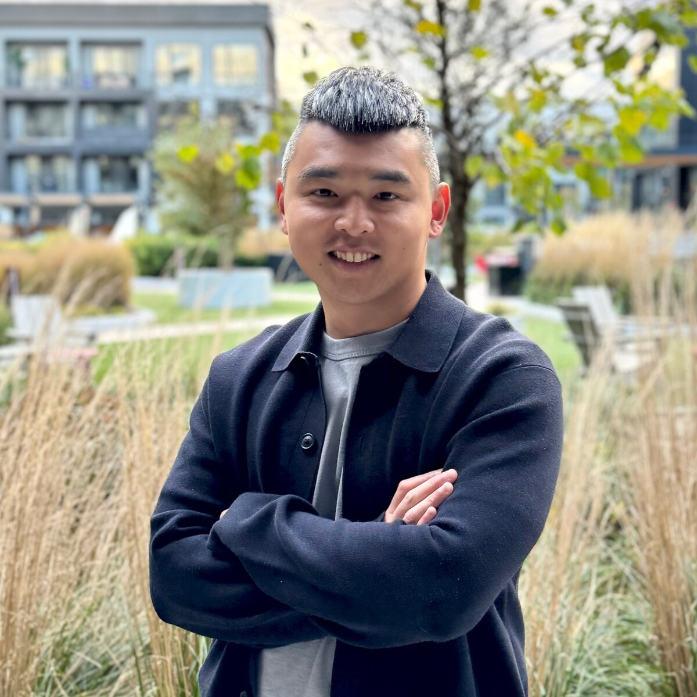

Tsung-Chi Lin
Assistant Professor
Email: tsungchi.lin@njit.edu
Office: 4204 Guttenberg Information Technologies Center (GITC)
Join Us! I am recruiting motivated PhD, MS, and undergraduate students to explore exciting research in human-robot interaction and physical AI.

I am an Assistant Professor in the Department of Computer Science at the New Jersey Institute of Technology. My research advances human-robot interaction with the goal of enabling the seamless integration of robots into people’s daily lives. I develop algorithms and interfaces that empower end users with diverse abilities and backgrounds to interact naturally with robots of varying hardware configurations and software capabilities in real-world environments, through paradigms ranging from direct operation to shared control to supervised autonomy. My work contributes to the future of adaptive and collaborative robots for large-scale human-robot symbiosis. I am the Principal Investigator and Director of the Physical Interaction, Collaboration, and Intelligent Robotics (PIONEER) Lab.
Before joining NJIT, I was a Postdoctoral Fellow in the Department of Computer Science at Johns Hopkins University. I earned my Ph.D. in Robotics Engineering from Worcester Polytechnic Institute, M.S. in Biomedical Engineering from National Taiwan University, and B.S. in Mechanical Engineering from Yuan Ze University. Prior to my doctoral studies, I worked as an Associate Researcher in the Service Robot Department at the Industrial Technology Research Institute.
Teaching
CS 485. Physical AI (undergraduate)
Topics: humanoid robots | robotics simulation | robot learning | synthetic data generation | human-AI interaction
Fall 2026CS 698. Human-Robot Interaction (graduate)
Topics: human-centered interfaces | human-robot collaboration | multi-human multi-robot interaction | HRI evaluation
Spring 2026